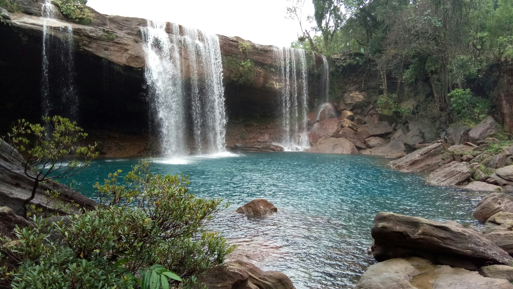
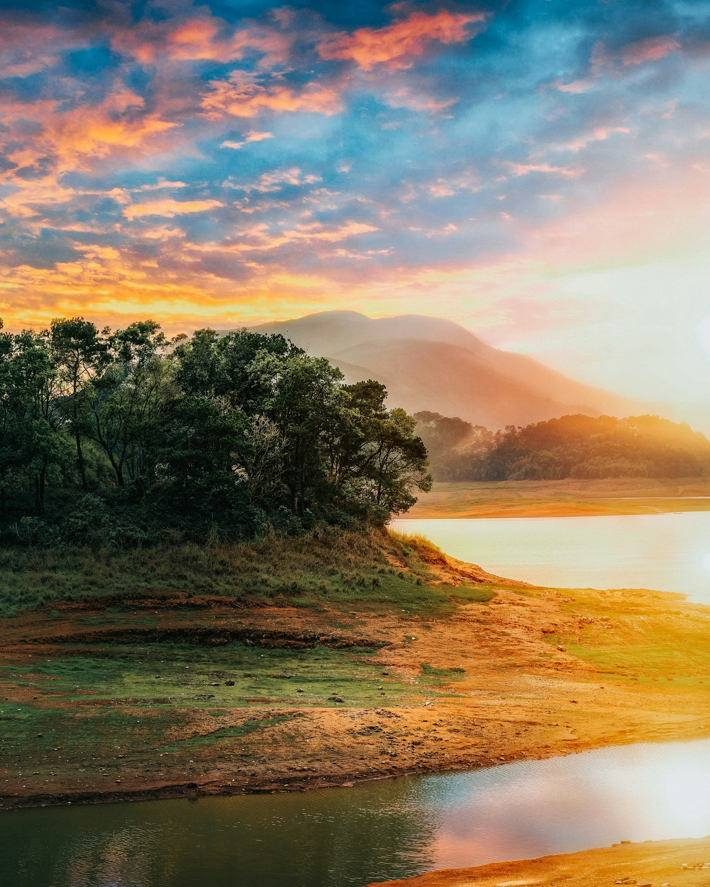
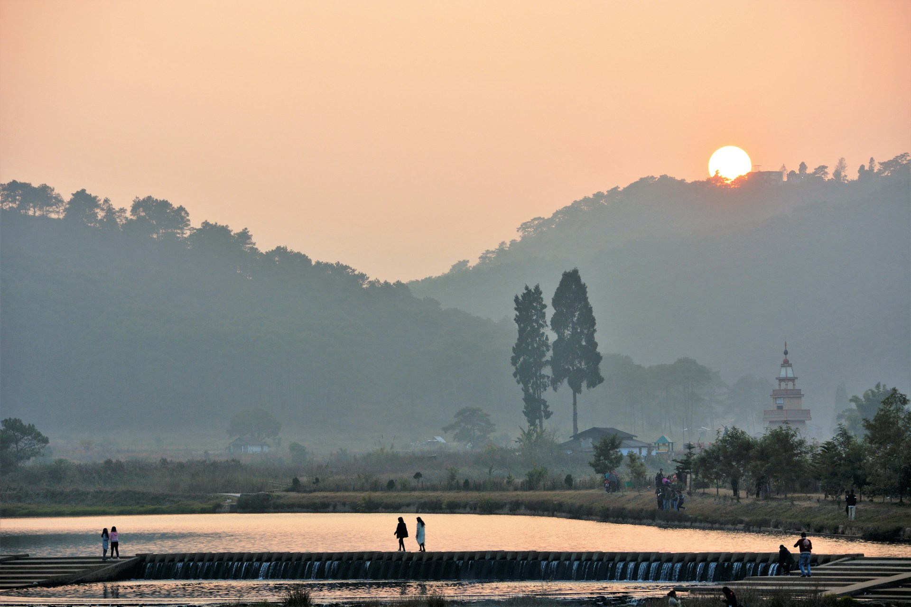
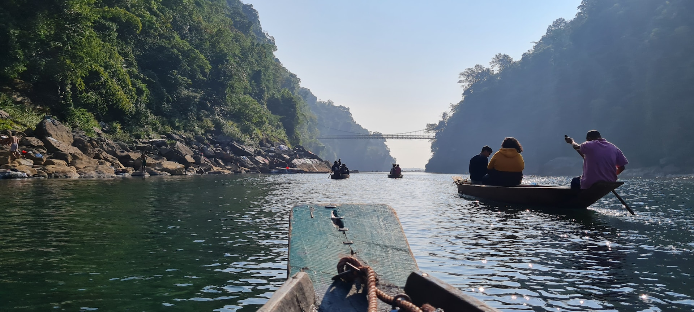

Meghalaya, nestled in the northeastern part of India, is famous for its scenic beauty, lush green landscapes, and vibrant tribal culture.
The name "Meghalaya" means 'Abode of Clouds', which aptly describes the state's misty hills and enchanting weather.
The state is known for its picturesque valleys, waterfalls, and caves. Cherrapunji, known as the wettest place on earth, and Mawsmai Cave, which is one of the longest caves in India, are famous attractions. Meghalaya is also home to the unique living root bridges, which are a marvel of nature and craftsmanship.
Meghalaya’s culture, festivals, and tribal heritage make it a must-visit destination for those seeking both adventure and cultural exploration.
The state is known for its picturesque valleys, waterfalls, and caves. Cherrapunji, known as the wettest place on earth, and Mawsmai Cave, which is one of the longest caves in India, are famous attractions. Meghalaya is also home to the unique living root bridges, which are a marvel of nature and craftsmanship.
Meghalaya’s culture, festivals, and tribal heritage make it a must-visit destination for those seeking both adventure and cultural exploration.





Tips for Visit
- Best season: October to April for pleasant weather and outdoor activities.
- Carry light woolen clothes as the weather can get chilly, especially at night.
- Visit Cherrapunji and Mawlynnong for breathtaking views and natural beauty.
- Be prepared for heavy rainfall in places like Cherrapunji; pack waterproof gear.
- Don’t miss exploring the famous living root bridges, a unique attraction of Meghalaya.

Ramesh Kumar
15 yrs guiding in Agra
⭐⭐⭐⭐⭐

mohmd ali
Mughal history specialist
⭐⭐⭐⭐☆

Imran Ali
Speaks English, Hindi, French
⭐⭐⭐⭐⭐

Priya Sharma
Cultural & heritage tours
⭐⭐⭐⭐
Local Services
| NAME | CONTACT |
|---|---|
| Tourist Helpdesk | +91-364-2222321 |
| Local Taxi | +91-9876543210 |
| Hotel Info | +91-364-2222325 |
| Emergency | 100 / 108 |
Nearby Places
| NAME | Location | Highlights |
|---|---|---|
| Cherrapunji | 50 km | Wettest place on Earth |
| Mawlynnong | 90 km | Cleanest village in Asia |
| Mawsmai Cave | 55 km | Longest cave in India |
| Living Root Bridge | 50 km | Unique natural bridge |